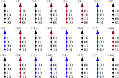

Gene interactions:
a geometric approach
Alex Gavryushkin
Joint work with
Kristina Crona, American University, Washington, DC, USA;
Bernd Sturmfels, University of California, Berkeley, USA;
Ewa Szczurek, University of Warsaw, Poland;
Niko Beerenwinkel, ETH Zurich, Basel, Switzerland
October 5, 2016
Surprised I'm not talking about trees?
Don't worry.- All my talks (including this one) are here:
http://alex.gavruskin.com/talks
- Preprints are here:
http://alex.gavruskin.com/publications
- And a blog post about what I've recently been up to is here:
http://matsen.fredhutch.org/general/2016/07/11/discrete-time-tree.html
Epistasis
Additive allelic effect:
$$ w_{11} + w_{00} = w_{01} + w_{10} $$Deviation from the additive expectation of allelic effects:
$u_{11} = w_{00} + w_{11} - (w_{01} + w_{10})$
Understanding three-way interactions
Marginal epistasis?
$u_{\color{blue}{0}11} = w_{\color{blue}{0}00} + w_{\color{blue}{1}00} + w_{\color{blue}{0}11} + w_{\color{blue}{1}11} − (w_{\color{blue}{0}01} + w_{\color{blue}{1}01}) − (w_{\color{blue}{0}10} + w_{\color{blue}{1}10})$
Total three-way interaction?
$u_{111} = w_{000} + w_{011} + w_{101} + w_{110} - (w_{001} + w_{010} + w_{100} + w_{111})$
Conditional epistasis?
$e = w_{\color{blue}{0}00} − w_{\color{blue}{0}01} − w_{\color{blue}{0}10} + w_{\color{blue}{0}11}$
Total mess!
(Algebraic) Geometry sorts out the mess!
$e = u_{011} + u_{111}$In general, the four interaction coordinates $$ u_{011}, u_{101}, u_{110}, u_{111} $$ allow to describe all possible kinds of interaction!
There are 20 types of interaction and they are known as circuits to Algebraic Geometry 111 students
Yep, we've got the list!
This is known as Beerenwinkel-Pachter-Sturmfels approach,
which provides a complete picture of interactions!BUT
the approach is
-
based on the availability of all fitness measurements!
-
computationally feasible for up to four loci!
Hence, we come to two research questions
Problem 1: What if no credible fitness measurements are available?
Like in this malaria drug resistance data set:

Ogbunugafor et al. Malar. J. 2016
Results at a glance
- We provide a complete characterization of fitness graphs that imply circuit interaction (think epistasis).
- Fitness graphs arise in competition-like experiments and include:
- Rank orders
- Mutation graphs
(Preprints with Crona, Beerenwinkel, and others to appear)
Rank orders. The simplest case.
Mutation graph
Connection between the two

Applications
- HIV-1
- Antibiotic resistance
- Fungi
- Gut microbiome (with Will Ludington, UC Berkeley)
- Synthetic lethality
- Knockdown cell lines
Methodologically, this allows us to advise further measurements (experiments) for incomplete data sets. This exponentially reduce the number of potential experiments (see HIV example).
Results in more detail
Efficient methods for:- Circuit interaction inference (including epistasis and three-way interaction) for total orders
- Complete analysis of partial orders (including mutation graphs) with "distance to interaction" inference
- Suggestions for possible completion in case of missing data and/or high uncertainty
Software (pre-release stage):
https://github.com/gavruskin/fitlands
Problem 2: What if the number of genes (loci) is 100?
- 2^98 of conditional epistases?
- 2^98 measurements to estimate marginal epistasis?
Not in this life
Concrete example: genome-wide RNAi perturbation screens
100 genes, 1000 experiments
Two ways out
- Ask biologists about "the most important genes" that are main fitness drivers (like we did in the HIV study)
- Add statistical assumptions, for example:
- Ignore higher-order terms in Taylor series approximations
- Structural hypotheses
(Preprints with Szczurek, Beerenwinkel, et al. to appear)
Thanks for your attention!
And stay tuned!
Funding: